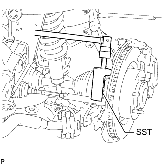

РУЛЕВОЙ МЕХАНИЗМ > СНЯТИЕ |
| 1. РАСПОЛОЖИТЕ ПЕРЕДНИЕ КОЛЕСА СТРОГО ПРЯМО |
| 2. СНИМИТЕ ПЕРЕДНИЕ КОЛЕСА |
| 3. СНИМИТЕ ДВИГАТЕЛЬ В СБОРЕ |
Для моделей с 1GR-FE:
Снимите двигатель (Нажмите здесь).
Для моделей с 1KD-FTV:
Снимите двигатель (Нажмите здесь).
Для моделей с 5L-E:
Снимите двигатель (Нажмите здесь).
Для моделей с 2TR-FE:
Снимите двигатель (Нажмите здесь).
| 4. ОТСОЕДИНИТЕ ПРОМЕЖУТОЧНЫЙ ВАЛ № 2 РУЛЕВОГО УПРАВЛЕНИЯ |
Для моделей с наклонной телескопической рулевой колонкой с ручным приводом:
Отсоедините промежуточный вал № 2 рулевого управления (Нажмите здесь).
Для моделей с наклонной телескопической рулевой колонкой с электроприводом:
Отсоедините промежуточный вал № 2 рулевого управления (Нажмите здесь).
| 5. ОТСОЕДИНИТЕ НАКОНЕЧНИК ЛЕВОЙ РУЛЕВОЙ ТЯГИ В СБОРЕ |
|  |
Отсоедините наконечник рулевой тяги в сборе с помощью SST.
| 6. ОТСОЕДИНИТЕ НАКОНЕЧНИК ПРАВОЙ РУЛЕВОЙ ТЯГИ В СБОРЕ |
| 7. ОТСОЕДИНИТЕ НАГНЕТАТЕЛЬНЫЙ ПАТРУБОК В СБОРЕ (для моделей с левосторонним рулевым управлением) |
 |
Снимите зажим и отсоедините нагнетательный патрубок (со стороны возвратной трубки) от механизма рулевого управления.
С помощью разрезной головки отсоедините нагнетательный патрубок (со стороны самого патрубка) от механизма рулевого управления.
Выверните болт и отсоедините зажим нагнетательного патрубка.
| *A | Для моделей с 1GR-FE: | *B | Для моделей с 1KD-FTV: |
| *C | Для моделей с 2TR-FE: | *D | Для моделей с 5L-E: |
| 8. ОТСОЕДИНИТЕ НАГНЕТАТЕЛЬНЫЙ ПАТРУБОК В СБОРЕ (для моделей с правосторонним рулевым управлением) |
Снимите зажим и отсоедините нагнетательный патрубок (со стороны возвратной трубки) от механизма рулевого управления.
С помощью разрезной головки отсоедините нагнетательный патрубок (со стороны самого патрубка) от механизма рулевого управления.
Выверните болт и отсоедините зажим нагнетательного патрубка.
| *A | Для моделей с 1GR-FE: | *B | Для моделей с 1KD-FTV: |
| *C | Для моделей с 2TR-FE: | *D | Для моделей с 5L-E: |
| 9. СНИМИТЕ РУЛЕВОЙ МЕХАНИЗМ ШЕСТЕРНЯ-РЕЙКА С УСИЛИТЕЛЕМ В СБОРЕ |
Выверните 2 болта, отверните 2 гайки и снимите рулевой механизм в сборе.